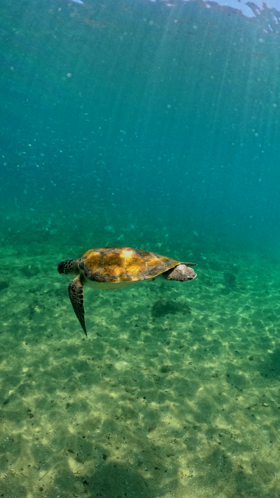
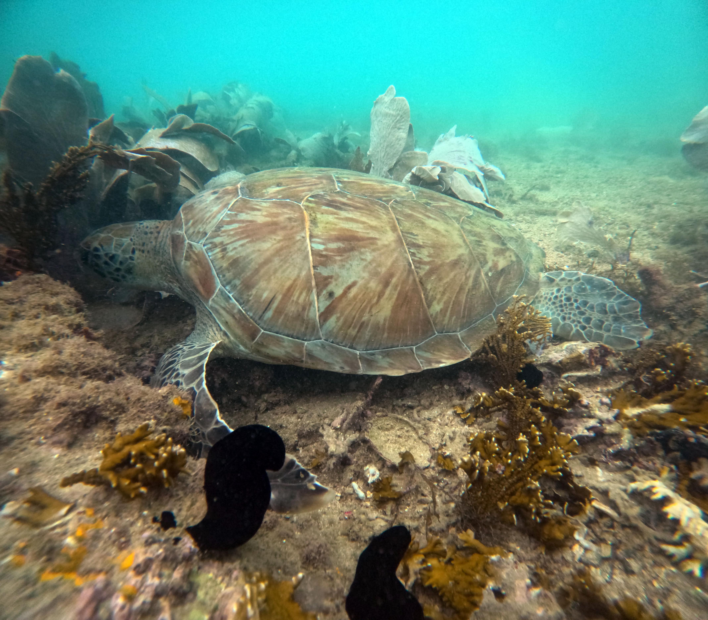
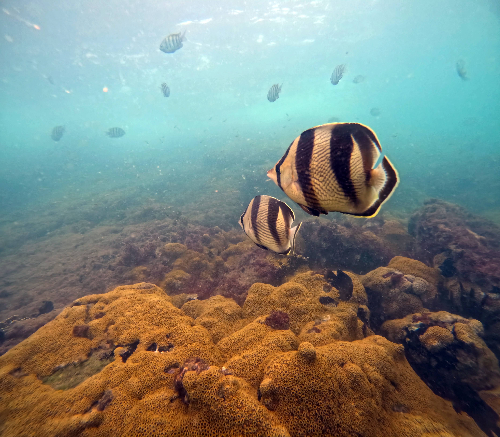
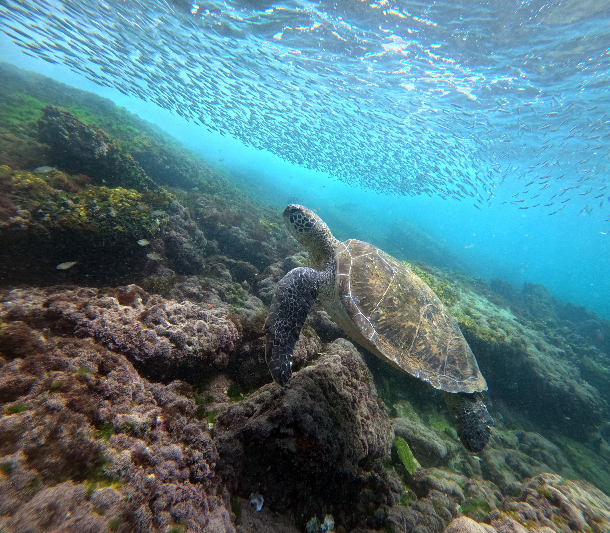
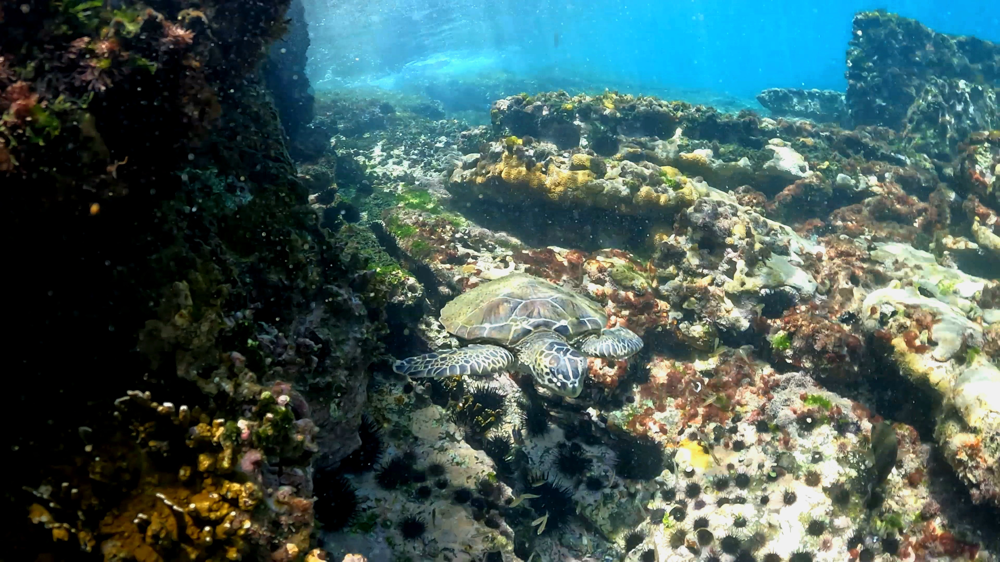
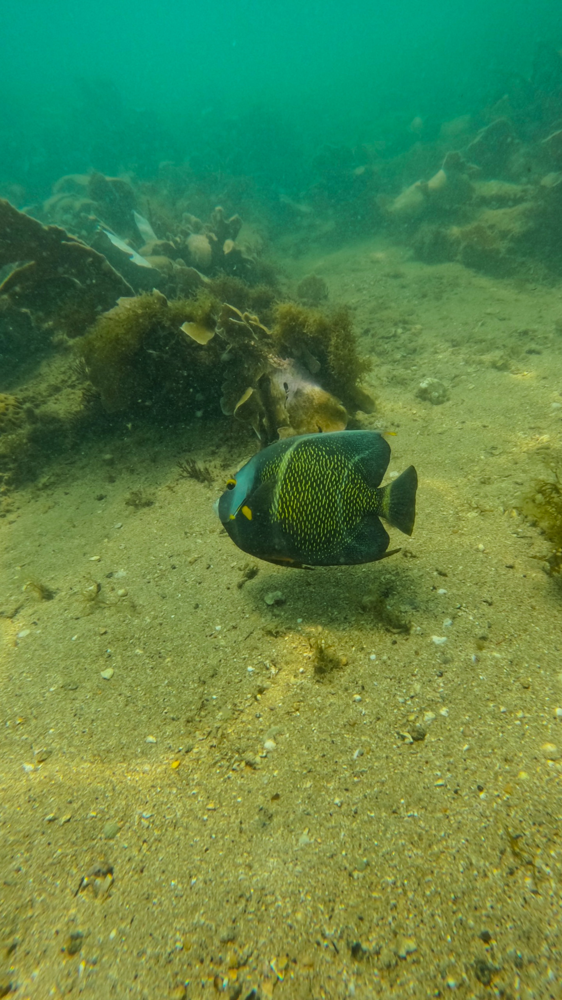
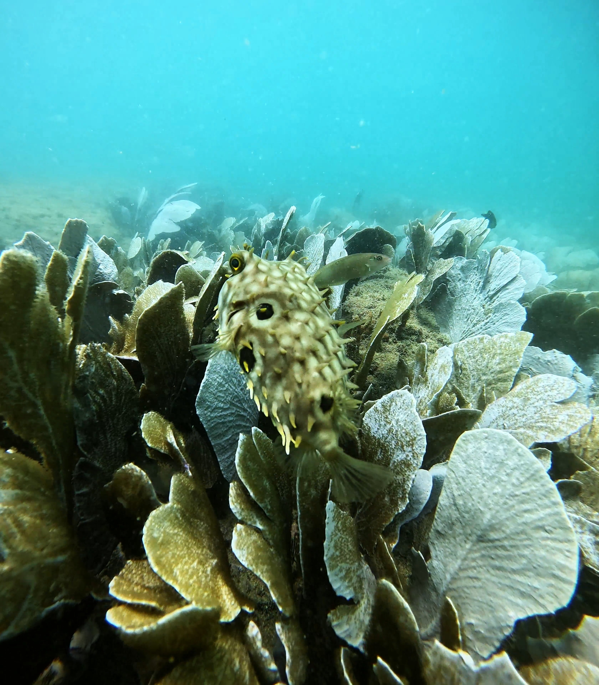
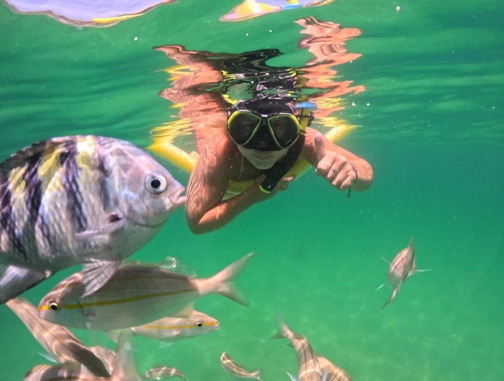
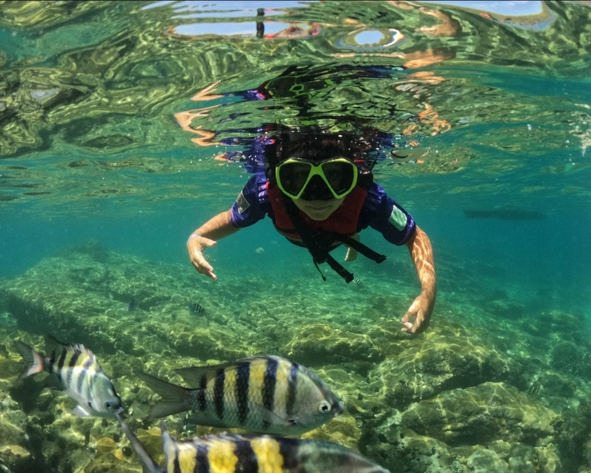
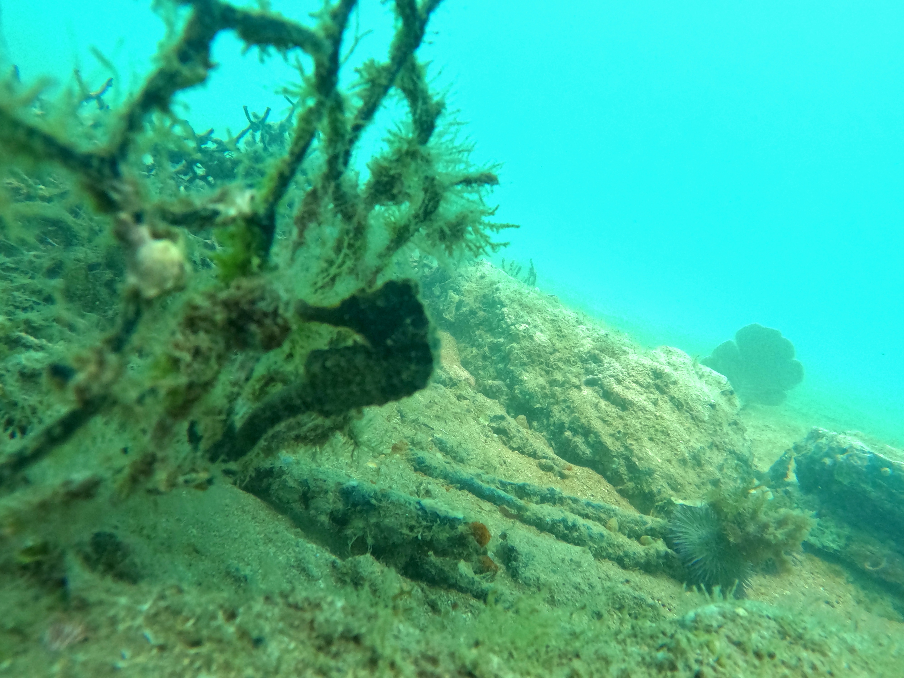

Experiência guiada de snorkel embarcado, navegando pelos pontos mais selvagens e preservados de Búzios — com paradas em Praia da Tartaruga, Azeda, João Fernandes, Ilha Feia e Ilha Branca — numa jornada de 3 horas no Atlântico.

Somos uma empresa formada por profissionais de diferentes áreas ligadas à navegação e à exploração submarina. Mergulhadores certificados, biólogos marinhos, capitães experientes e especialistas em turismo náutico se uniram com um propósito em comum: oferecer a experiência de snorkel mais autêntica e segura de Búzios.
Cada saída é planejada com atenção às condições do mar, à biodiversidade dos pontos visitados e ao conforto de cada passageiro. Nosso olhar é o de exploradores — nossa missão é compartilhar esse mar com você.
Duração total: 3 horas · Selecione o turno ao reservar
Recepção pela equipe, confirmação de reservas e briefing completo de segurança. Snacks e bebidas de boas-vindas enquanto você conhece o grupo e os guias.
Início da navegação rumo ao primeiro ponto. O mar de Búzios se abre à sua frente — visibilidade, fauna e flora esperando por você.
Primeira entrada na água com acompanhamento dos guias. Corais, peixes tropicais e, com sorte, tartarugas marinhas. Equipamento fornecido a bordo.
Entre uma parada e outra, cerveja gelada, sucos tropicais e snacks a bordo. O mar de Búzios como cenário e boa música no ar.
Mais dois pontos de mergulho nos trechos mais preservados do litoral búziano. Cada parada é uma nova janela para o oceano.
Retorno tranquilo após três horas de exploração. Memórias, fotografias e, certamente, vontade de voltar.
Selecionamos 3 paradas por saída entre estes destinos exclusivos, de acordo com as condições do mar e a melhor experiência para cada grupo.

Lar de tartarugas marinhas e de uma das melhores visuais subaquáticas de Búzios. Águas verdes e cristalinas, ideais para observar corais e peixes tropicais em pouca profundidade.

Uma praia de acesso restrito, acessível principalmente pelo mar. Água de tonalidade esverdeada, cristalina e preservada. Ambiente íntimo, com formações rochosas que servem de abrigo para uma rica vida marinha.

Casa do Parque de Corais de Búzios. Com instrutores certificados, você explora a vida subaquática em profundidades de até 10m, entre arraias, polvos e cardumes de cores vibrantes.

Um dos destinos preferidos pelos mergulhadores experientes. Formações rochosas imponentes e ecossistema submarino de tirar o fôlego, com visibilidade excepcional nas épocas favoráveis.

Uma ilha de areia clara emergindo do oceano com águas rasas e quentes ao redor. Ideal para snorkel extensivo e contemplação. A paisagem é um dos cartões-postais mais autênticos de Búzios.
Imagens reais das nossas saídas — fauna, corais e a vida submarina que aguarda você nas águas de Búzios.




Navegação com capitão credenciado pela Marinha do Brasil, com profundo conhecimento das águas e rotas de Búzios.
Equipamento de áudio de qualidade com playlist cuidadosamente selecionada. Ritmo certo para cada momento da travessia.
Cerveja gelada, refrigerantes, água e sucos tropicais disponíveis durante todo o percurso. Snacks complementares inclusos.
Máscaras, respiradores e nadadeiras de qualidade para todos os participantes. Higienizados e verificados antes de cada saída.
Coletes salva-vidas individuais, kit de primeiros socorros, rádio VHF e toda documentação exigida pela Marinha em plena vigência.
Você escolhe a profundidade da sua experiência. Ambas as modalidades são acompanhadas por profissionais certificados.
"As águas de João Fernandes são transparentes demais. Vi um polvo pela primeira vez na vida. Os snacks e as bebidas foram ótimos. Equipe impecável do início ao fim."
"Fiz o mergulho com cilindro na Ilha Feia. Nadei com arraias. O instrutor foi paciente e muito profissional. Uma experiência que não cabe em palavras."
"Levei toda a família, crianças de 9 e 12 anos incluídas. Todos adoraram o snorkel. A equipe soube lidar com cada perfil de passageiro. Recomendo de olhos fechados."
"Vine desde Buenos Aires para esto. La Praia da Tartaruga es un paraíso. El equipo habla español perfectamente. ¡Volveré el año que viene sin dudas!"
Sem taxas ocultas. Tudo que você vai curtir está incluso no valor.
Crianças até 5 anos: gratuito · De 6 a 11 anos: 50% de desconto · Alta temporada sujeita a reajuste
Nossa equipe responde em até 2 horas. Você também pode falar diretamente pelo WhatsApp para agilizar sua reserva.
Falar pelo WhatsAppRecebemos seu pedido de reserva. Nossa equipe entrará em contato em até 2 horas para confirmar disponibilidade e detalhes.
Até breve nas águas de Búzios.